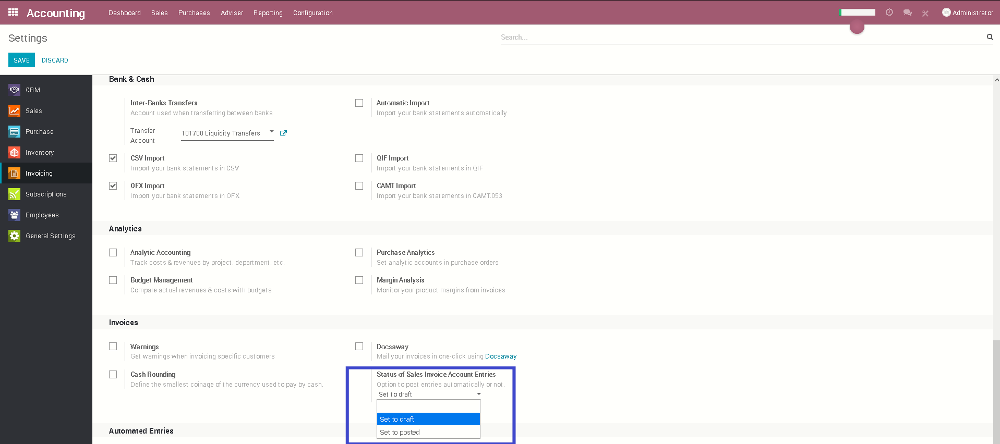

<section class="oe_container">
    <div class="oe_row oe_spaced">
        <h2 class="oe_slogan" style="color:#875A7B;">Easy configuration</h2>
        <h3 class="oe_slogan">Option for generated accounting entries from expenses to post automatically or not. To configure, go to Expenses -> Configuration -> Billing</h3>
        <div class="oe_span12">
            <div class="oe_demo oe_picture oe_screenshot">
                
            </div>
        </div>
    </div>
</section>

<section class="oe_container oe_separator">
</section>
